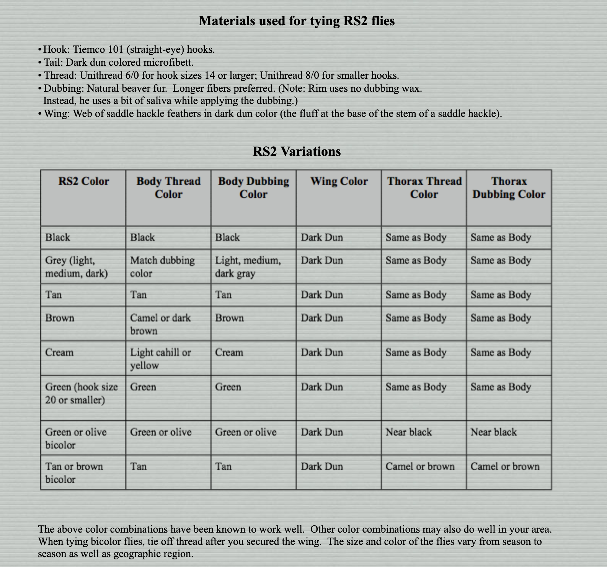

This page contains the same tying steps as from the PDF file--just in a different form.

The PDF version of the same can be found here.
You may copy content from this site unless it’s noted otherwise. However, borrowed content must reference this site as the source. Questions and comments about the RS2 Home Page can be sent to Frank Horvath. I’ll reply as time allows.
Return to the main page by clicking here.